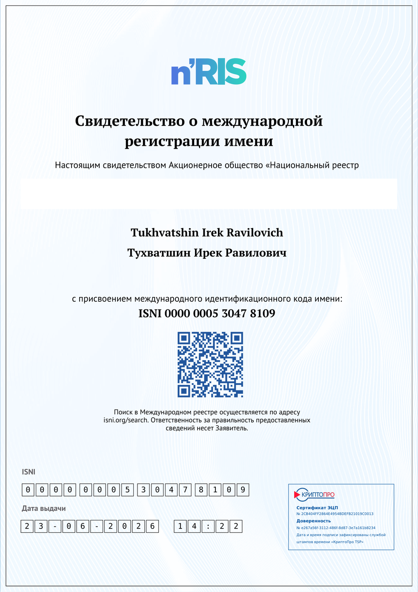
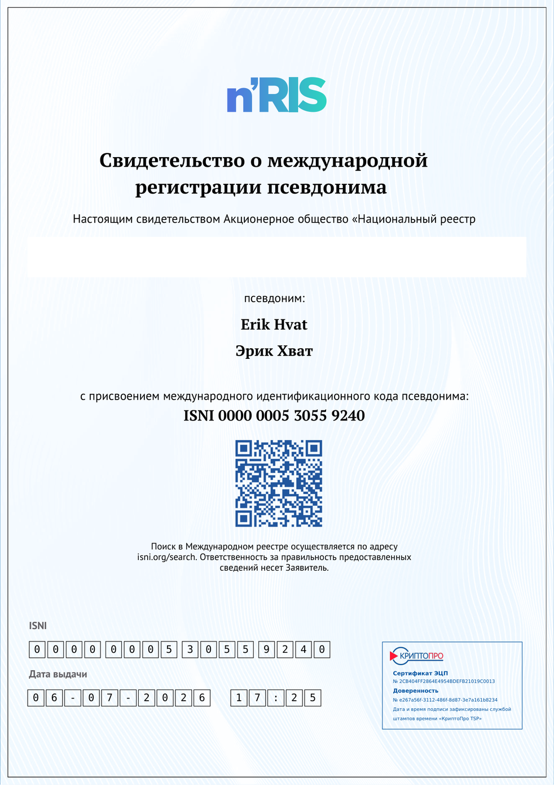
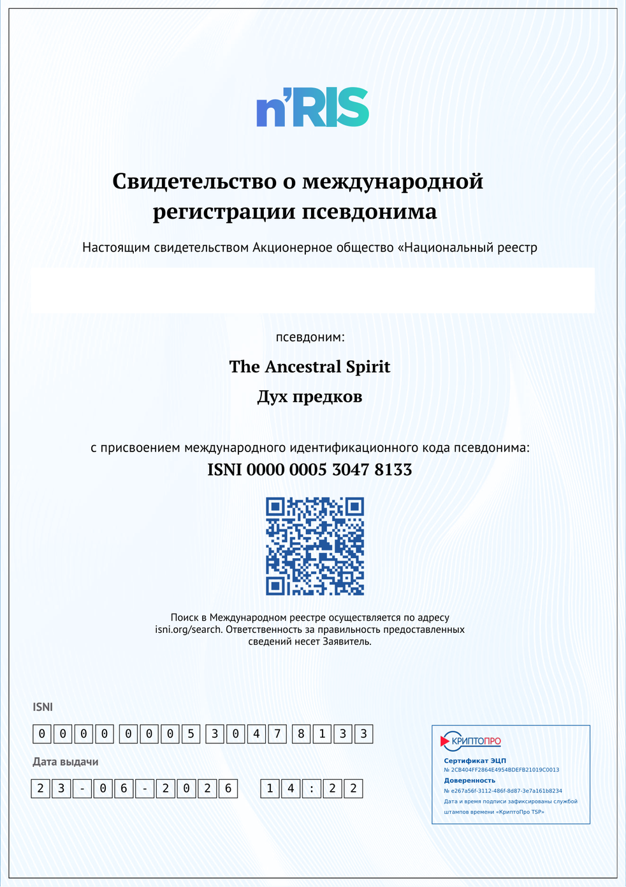

Я транслирую свои музыкальные композиции, записанные с помощью AI-технологий, через пять отдельных направлений, которые имеют собственное характерное звучание и наполнение. Благодаря такому разделению каждая композиция имеет больше шансов найти своего слушателя.
Философские и любовные песни на русском языке.
Слушать во VK → Виртуальный артистПесни из репертуара Эрика Хвата на английском языке.
Слушать во VK → Виртуальная творческая группаМузыка для ресторанов и кино.
Слушать во VK → Виртуальная творческая группаЭтническая музыка в стиле коренных народов Америки.
Слушать во VK → Виртуальная творческая группаСовременная светлая музыка и песни в жанрах Pop, Rock, Jazz на русском и английском языках.
Слушать во VK →Имя и все творческие псевдонимы зарегистрированы в Международном реестре International Standard Name Identifier (ISNI) — системе, разрешающей неоднозначность имён и связывающей данные об авторе между базами данных и реестрами по всему миру.





Свидетельства показаны без паспортных данных заявителя — эта часть документа скрыта.
Музыкальные произведения доступны для приобретения частичных прав и лицензирования — исполнителям, рестораторам, кинопродюсерам и другим заказчикам.